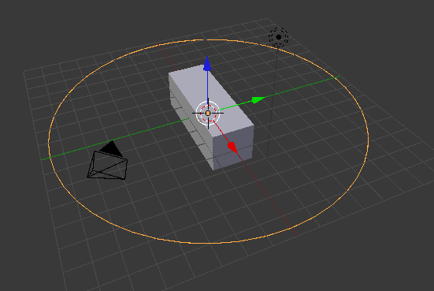
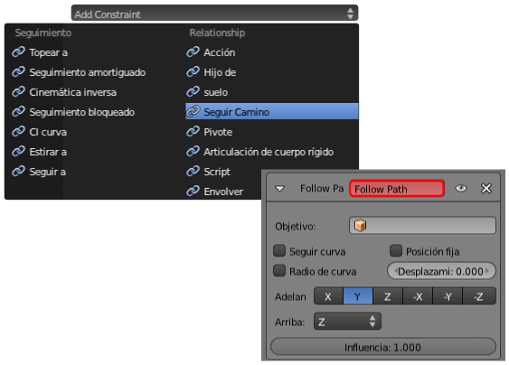
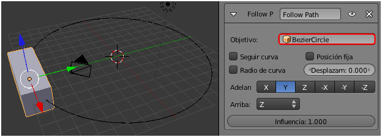

La restricción
En el terreno de la animación es muy habitual que los objetos cumplan con obligaciones del tipo no pasar de..., no girar más de..., apuntar hacia..., copiar el movimiento de... A ese tipo de obligaciones es lo que en Blender denominamos Restricciones y tienen su propio panel, cuyo icono es muy significativo: unas cadenas  .
.
Para analizar el funcionamiento de este recurso necesitamos el cubo inicial y una curva circular (Agregar/Curva/Círculo). El cubo lo escalamos en X ("SX") y el círculo lo escalamos ("S") para que quede como en esta imagen.
Al cubo le aplicamos la restricción Seguir camino.
Nada ocurre en el editor Vista 3D. El propio cuadro de opciones de la restricción parece estar alertándonos de que algo erróneo está pasando mediante un campo con el fondo rojo.
El motivo de que la restricción no tenga efecto es que Blender aún no sabe a qué curva debe seguir el cubo. En el campo Objetivo, con el icono , están las curvas disponibles (en nuestro caso sólo una llamada, por defecto, BezierCircle)
Ahora sí: el cubo obedece y se coloca en el punto que, a nivel interno, Blender considera el origen de la curva. Todo parece indicar que con la puesta en marcha de la animación ("Alt_A") el cubo comenzará a desplazarse pero no es así. Pero sacamos nuestras propias conclusiones:
- Adelante. Nos dice que es el eje Y (Local) del objeto el que se coloca en dirección a la curva.
- Arriba. El eje Z (Local) es el que apunta hacia arriba.
Recordamos que al no haberse girado el cubo, sus ejes Locales coinciden con los Globales del entorno 3D.